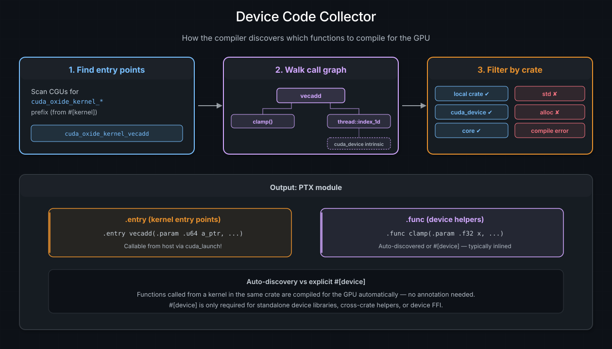

Kernels and Device Functions#
A kernel is a function that runs on the GPU -- the entry point that the host launches across thousands of threads. A device function is a helper that runs on the GPU but can only be called from another device function or kernel, never from the host. This chapter covers both, along with the Rust patterns that are (and aren't) supported in device code.
参见
CUDA Programming Guide -- Kernels for the authoritative CUDA C++ reference on kernel and device functions.
#[kernel] -- the GPU entry point#
Annotating a function with #[kernel] tells cuda-oxide to compile it as a GPU
entry point. The function must return () -- kernels communicate results by
writing to output buffers, not by returning values.
use cuda_device::{kernel, thread, DisjointSlice};
#[kernel]
pub fn vecadd(a: &[f32], b: &[f32], mut c: DisjointSlice<f32>) {
let idx = thread::index_1d();
if let Some(c_elem) = c.get_mut(idx) {
*c_elem = a[idx.get()] + b[idx.get()];
}
}
Under the hood, #[kernel] does three things:
Renames the function into the reserved
cuda_oxide_kernel_<hash>_<name>namespace so the compiler's collector can identify it as a device entry point. The exact prefix is owned by the workspace-internalreserved-oxide-symbolscrate; the<hash>suffix makes the namespace unguessable for user code.Adds
#[no_mangle]to preserve the symbol name in the generated PTX.Generates host lookup metadata so typed launch code can find the correct PTX entry. Generic kernels also get a readable helper such as
scale_ptx_name::<f32>(); generated marker types are internal plumbing.
In the generated PTX, a kernel becomes a .entry directive -- the GPU
equivalent of main:
.entry vecadd(.param .u64 a, .param .u64 a_len, ...) { ... }
Parameter constraints#
Kernel parameters cross the host/device ABI boundary through argument scalarization (covered in the Memory and Data Movement chapter). The key rules:
Slices (
&[T],DisjointSlice<T>) become a pointer + length pair.Scalars (
u32,f32, etc.) are passed directly.Structs and closures by value travel as a single byval
.param. The field-by-field flattening still applies to internal device-to-device calls, but the kernel boundary itself receives the whole aggregate as one value to match the single packet slot the host launcher pushes.No heap-allocated types (
Vec,String,Box) -- thealloccrate is allowed through the compiler, but no device-side#[global_allocator]is configured today. Even with one, devicemallocis extremely slow.
Device helper functions#
Not all GPU code belongs in the kernel itself. You can factor logic into helper functions that the compiler will also compile for the GPU.
Auto-discovered helpers#
The simplest approach: just write a normal Rust function and call it from your
kernel. The compiler's collector traverses the call graph from each
#[kernel] entry point and automatically compiles every reachable function for
the GPU -- no annotation needed:
fn clamp(x: f32, lo: f32, hi: f32) -> f32 {
if x < lo { lo } else if x > hi { hi } else { x }
}
#[kernel]
pub fn apply_clamp(input: &[f32], mut out: DisjointSlice<f32>) {
let idx = thread::index_1d();
if let Some(out_elem) = out.get_mut(idx) {
*out_elem = clamp(input[idx.get()], 0.0, 1.0);
}
}
The clamp function is compiled to a PTX .func (device function) and
typically inlined by the compiler, so there is no call overhead.
When #[device] is needed#
The #[device] attribute is required in three specific scenarios where
auto-discovery is not sufficient:
Scenario |
Why |
|---|---|
Standalone device libraries |
No |
Cross-crate device functions |
The function is in a different crate from the kernel |
Device FFI |
The function is exposed as |
use cuda_device::device;
#[device]
pub fn magnitude(x: f32, y: f32) -> f32 {
(x * x + y * y).sqrt()
}
#[kernel] vs #[device]#
Feature |
|
|
Auto-discovered |
|---|---|---|---|
PTX directive |
|
|
|
Launchable from host |
Yes, via typed module |
No |
No |
Can return a value |
No (must be |
Yes |
Yes |
Callable from device code |
Yes |
Yes |
Yes |
Annotation required |
Always |
Only for standalone/cross-crate/FFI |
Never |
What Rust works on the GPU#
cuda-oxide compiles standard Rust through rustc -- it is not a subset
language. That said, GPU code runs in a no_std environment without a
device-side heap allocator configured, so certain Rust features are
unavailable today. Here is the current support matrix:
Supported#
Feature |
Notes |
|---|---|
Primitive types ( |
Full support |
Structs and tuples |
Decomposed at ABI boundary |
Enums ( |
Including |
|
Multi-way branching |
|
Range-based and iterator-based |
Iterators ( |
Desugared through MIR |
|
Inside loops |
Arrays ( |
Read, write, indexing |
Slices ( |
Read-only; mutable writes via |
Closures (within device code) |
Normal Rust semantics |
Generic functions |
Monomorphized per call site |
|
For advanced patterns |
Not supported#
Feature |
Reason |
Alternative |
|---|---|---|
|
Require heap allocator (no device-side |
Use fixed-size arrays or slices |
|
Require formatting machinery + I/O |
Use |
|
No OS on GPU |
Communicate via buffers |
Trait objects ( |
Require vtable dispatch |
Use generics (monomorphized) |
|
Formatting + allocation |
Use |
小技巧
If you accidentally use an unsupported feature, the compiler will produce a
clear error: "CUDA-OXIDE: FORBIDDEN CRATE IN DEVICE CODE" with a list of
allowed crates (core, alloc, cuda_device, and your local crate).
Loop unrolling#
Inside a #[kernel] or #[device] function, put #[unroll] directly on a
loop whose trip count is known at compile time. This requests that the compiler
remove the loop and lay out copies of its body:
#[kernel]
pub fn sum_four(mut out: DisjointSlice<u32>) {
let tid = thread::index_1d();
if let Some(out_elem) = out.get_mut(tid) {
let mut sum = 0;
let mut i = 0;
#[unroll]
while i < 4 {
sum += i;
i += 1;
}
*out_elem = sum;
}
}
The pass currently recognizes explicit counted while loops. Range-based
for loops are not yet recognized.
Use #[unroll(N)], where N >= 2, when the trip count is only known at runtime.
The loop then does N iterations' work per trip. A small remainder loop handles
any leftover iterations, so n does not have to be divisible by N:
let mut i = 0;
#[unroll(4)]
while i < n {
process(i);
i += 1;
}
An annotated loop may contain other loops. Only the loop carrying the annotation is unrolled; each inner loop is copied intact and remains a loop. Add a separate annotation to an inner loop if you want to unroll it too.
Loops with several continue paths are supported. Full #[unroll] also
preserves break paths and loops with more than one exit target.
Partial #[unroll(N)] currently requires the loop condition to be the only
exit. If the loop has a break or another exit, the compiler warns and does not
unroll that loop.
Partial unrolling also requires a counted-up loop: the counter must have a
positive step, use < or <=, and compare against a limit that does not change
inside the loop. The compiler warns and does not unroll unsupported requests.
To keep generated code bounded, one annotation may create at most 1,024 body copies, 8,192 cloned basic blocks, and 65,536 cloned operations. A larger request warns and is not unrolled. Full variable-debug builds also skip unrolling because they keep loop variables in memory instead of SSA form.
Unrolling trades larger generated code for fewer branches and more optimization opportunities. Use it for small or performance-critical loops, and measure the result.
参见
For how the compiler analyzes and rewrites annotated loops, including the stage-index peephole, see Compiler Optimizations.
#[launch_bounds] -- occupancy hints#
The #[launch_bounds] attribute tells the compiler how many threads you intend
to launch per block. This lets the PTX assembler make better register allocation
decisions and can improve occupancy:
#[kernel]
#[launch_bounds(256, 2)]
pub fn optimized_kernel(mut out: DisjointSlice<f32>) {
// ...
}
Parameter |
Required |
PTX directive |
Description |
|---|---|---|---|
|
Yes |
|
Maximum threads per block |
|
No |
|
Minimum concurrent blocks per SM |
The generated PTX includes these directives:
.entry optimized_kernel .maxntid 256, 1, 1 .minnctapersm 2 { ... }
小技巧
#[launch_bounds] must appear after #[kernel]:
#[kernel]
#[launch_bounds(256, 2)] // correct
pub fn my_kernel(...) { }
The collector -- how device code is discovered#
When you build with cargo oxide, the rustc-codegen-cuda backend runs a
collector pass that determines which functions to compile for the GPU:
Scan all compilation units for functions in the reserved
cuda_oxide_kernel_<hash>_namespace (generated by#[kernel]).For each kernel, traverse the call graph and collect all transitively reachable functions.
Filter each callee against the allowed-crate list:
Crate |
Allowed |
Why |
|---|---|---|
Your local crate |
Yes |
Your kernel and helper code |
|
Yes |
GPU intrinsics (threads, warps, shared memory) |
|
Yes |
|
|
No |
Requires OS facilities not available on GPU |
|
Allowed |
Passes the collector, but no device-side allocator is wired up yet. Link-time error today. |
If the collector encounters a call into a forbidden crate, it reports a compile-time error rather than generating broken PTX.
{kind=link}

The device code collector: starting from #[kernel] entry points, the compiler walks the call graph to discover all reachable device functions, then filters each callee against the allowed-crate list (local crate, cuda_device, core). The output is a PTX module with .entry and .func directives.#
no_std and panic behavior#
Device code runs in an implicit #![no_std] environment. You do not need to add
this attribute yourself -- the compiler backend handles it.
Panic behavior: all unwind paths in MIR are treated as unreachable. If a
panic actually triggers at runtime (e.g., an array bounds check fails), the GPU
executes a trap instruction, which causes the host to receive
CUDA_ERROR_ILLEGAL_INSTRUCTION. This is semantically equivalent to
panic=abort but does not require any special compiler flags.
In practice this means:
unwrap()andexpect()work but will trap the GPU onNone/Err.assert!anddebug_assert!work but trap on failure.panic!("message")is not supported (the formatting machinery is unavailable) -- usegpu_assert!ordebug::trap()instead.
参见
The Error Handling and Debugging chapter
covers gpu_printf!, gpu_assert!, and cargo oxide debug for diagnosing
kernel failures.